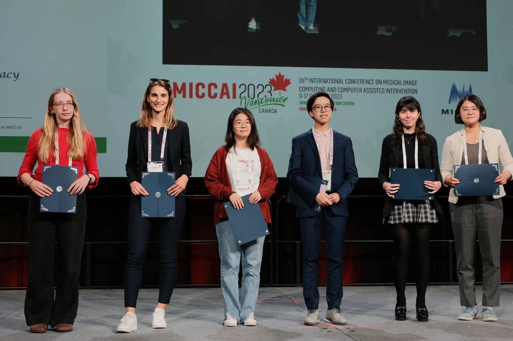
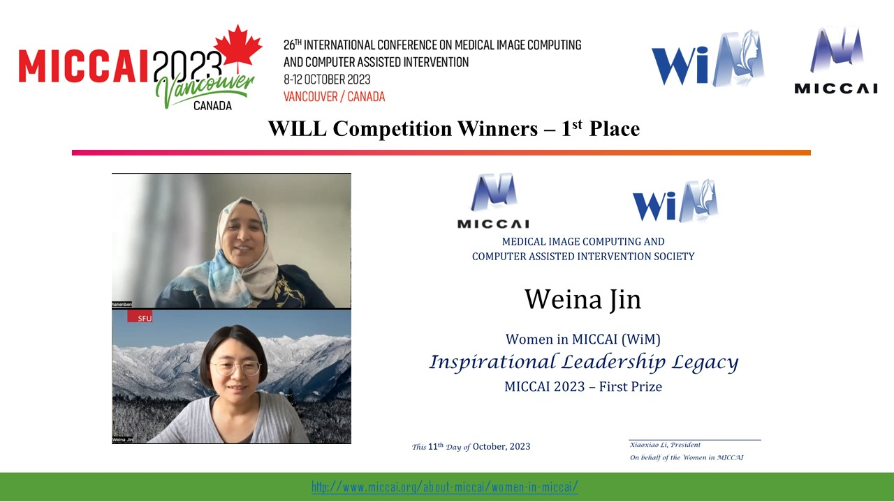
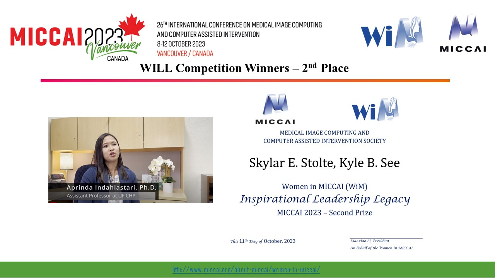
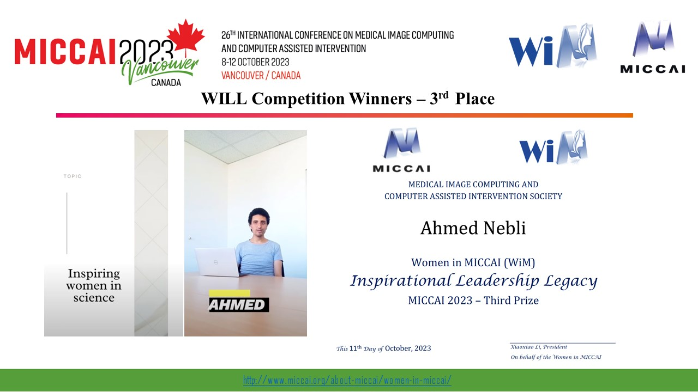

WiM WILL 2023 Winners
1st. Place: Weina Jin & Hanene Ben Yedder; Simon Fraser University
2nd. Place: Skylar E. Stolte, Kyle B. See & Aprinda Indahlastari; University of Florida
3rd Place: Ahmed Nebli & Nataliia Fedorchenko; Institute for Neuroscience and Medicine -1 Structural and Functional Organisation of the Brain, Research Centre Juelich
WiM WILL 2022 Winners
1st. Place: Medical Imaging: The journey of a researcher; Chiara Di Vece, Dimitrios Anastasiou & Francisco Porto Guerra
2nd. Place: Overcoming Challenges in Research: A Student's Perspective; Muhammad Asad & Navodini Wijethilake
3rd. Place: Research Life - Sneak Peak by Leonardo Antonio; Leonardo Antonio Ayala & Annika Reinke
WiM WILL 2021 Winners
Watch the Awards Announcement
1st. Place: A Career in Medical Imaging: A Woman's Perspective; Shambhavi Mishra & Bella Specktor
2nd. Place: Into the world on an African research woman; Ahmed Nebli & Islem Mihri
3rd. Place: Getting into Medical Imaging | Research Advice | Motivation to Explore the Domain; Shambhavi Mishra & Francesco Calivà

Women in MICCAI
MICCAI-endorsed event
Youtube channel: WiM WILL
Instagram:WiM
WiM Inspirational Leadership Legacy | MICCAI2023